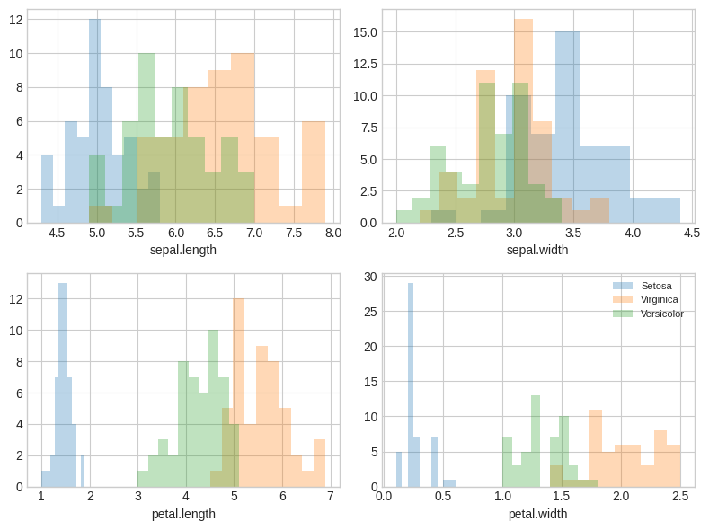
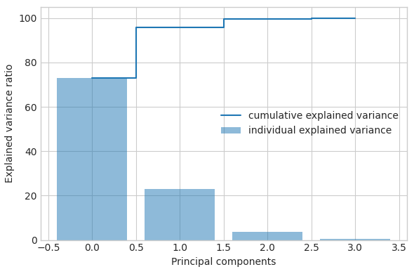
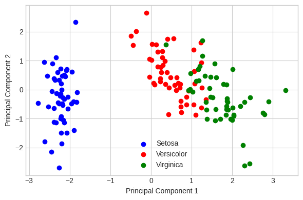
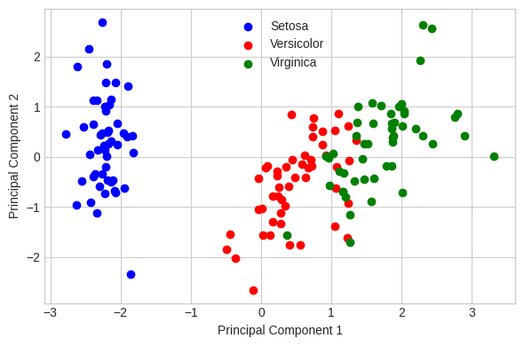

import pandas as pd
import numpy as np
import seaborn as sns
import matplotlib.pyplot as plt
df=pd.read_csv('iris.csv', sep=',')
df.head()
FileNotFoundErrorTraceback (most recent call last)
<ipython-input-2-428b89ba37cb> in <cell line: 1>()
----> 1 df=pd.read_csv('iris.csv', sep=',')
2 df.head()
/usr/local/lib/python3.10/dist-packages/pandas/util/_decorators.py in wrapper(*args, **kwargs)
209 else:
210 kwargs[new_arg_name] = new_arg_value
--> 211 return func(*args, **kwargs)
212
213 return cast(F, wrapper)
/usr/local/lib/python3.10/dist-packages/pandas/util/_decorators.py in wrapper(*args, **kwargs)
329 stacklevel=find_stack_level(),
330 )
--> 331 return func(*args, **kwargs)
332
333 # error: "Callable[[VarArg(Any), KwArg(Any)], Any]" has no
/usr/local/lib/python3.10/dist-packages/pandas/io/parsers/readers.py in read_csv(filepath_or_buffer, sep, delimiter, header, names, index_col, usecols, squeeze, prefix, mangle_dupe_cols, dtype, engine, converters, true_values, false_values, skipinitialspace, skiprows, skipfooter, nrows, na_values, keep_default_na, na_filter, verbose, skip_blank_lines, parse_dates, infer_datetime_format, keep_date_col, date_parser, dayfirst, cache_dates, iterator, chunksize, compression, thousands, decimal, lineterminator, quotechar, quoting, doublequote, escapechar, comment, encoding, encoding_errors, dialect, error_bad_lines, warn_bad_lines, on_bad_lines, delim_whitespace, low_memory, memory_map, float_precision, storage_options)
948 kwds.update(kwds_defaults)
949
--> 950 return _read(filepath_or_buffer, kwds)
951
952
/usr/local/lib/python3.10/dist-packages/pandas/io/parsers/readers.py in _read(filepath_or_buffer, kwds)
603
604 # Create the parser.
--> 605 parser = TextFileReader(filepath_or_buffer, **kwds)
606
607 if chunksize or iterator:
/usr/local/lib/python3.10/dist-packages/pandas/io/parsers/readers.py in __init__(self, f, engine, **kwds)
1440
1441 self.handles: IOHandles | None = None
-> 1442 self._engine = self._make_engine(f, self.engine)
1443
1444 def close(self) -> None:
/usr/local/lib/python3.10/dist-packages/pandas/io/parsers/readers.py in _make_engine(self, f, engine)
1733 if "b" not in mode:
1734 mode += "b"
-> 1735 self.handles = get_handle(
1736 f,
1737 mode,
/usr/local/lib/python3.10/dist-packages/pandas/io/common.py in get_handle(path_or_buf, mode, encoding, compression, memory_map, is_text, errors, storage_options)
854 if ioargs.encoding and "b" not in ioargs.mode:
855 # Encoding
--> 856 handle = open(
857 handle,
858 ioargs.mode,
FileNotFoundError: [Errno 2] No such file or directory: 'iris.csv'
df['variety'].value_counts()
Setosa 50
Versicolor 50
Virginica 50
Name: variety, dtype: int64
df.columns
Index(['sepal.length', 'sepal.width', 'petal.length', 'petal.width',
'variety'],
dtype='object')
X=df.iloc[:,0:4].values
y=df.iloc[:,4].values
label_dict={1: 'Setosa',
2: 'Virginica',
3: 'Versicolor'}
feature_dict={0: 'sepal.length',1: 'sepal.width',2: 'petal.length',3: 'petal.width'}
with plt.style.context('seaborn-whitegrid'):
plt.figure(figsize=(8,6))
for i in range(4):
plt.subplot(2,2,i+1)
for lab in ('Setosa','Virginica','Versicolor'):
plt.hist(X[y==lab, i],
label=lab,
bins=10,
alpha=0.3)
plt.xlabel(feature_dict[i])
plt.legend(loc='upper right', fancybox=True,fontsize=8)
plt.tight_layout()
plt.show()

X_std.shape[0]-1
---------------------------------------------------------------------------
NameError Traceback (most recent call last)
<ipython-input-7-afc6288d8b52> in <cell line: 1>()
----> 1 X_std.shape[0]-1
NameError: name 'X_std' is not defined
from sklearn.preprocessing import StandardScaler
X_std=StandardScaler().fit_transform(X)
mean_vec=np.mean(X_std,axis=0)
cov_mat=(X_std-mean_vec).T.dot((X_std-mean_vec))/(X_std.shape[0]-1)
print("Covariance Matrix \n%s" %cov_mat)
Covariance Matrix
[[ 1.00671141 -0.11835884 0.87760447 0.82343066]
[-0.11835884 1.00671141 -0.43131554 -0.36858315]
[ 0.87760447 -0.43131554 1.00671141 0.96932762]
[ 0.82343066 -0.36858315 0.96932762 1.00671141]]
print("Numpy Covariance matrix \n%s" %np.cov(X_std.T))
Numpy Covariance matrix
[[ 1.00671141 -0.11835884 0.87760447 0.82343066]
[-0.11835884 1.00671141 -0.43131554 -0.36858315]
[ 0.87760447 -0.43131554 1.00671141 0.96932762]
[ 0.82343066 -0.36858315 0.96932762 1.00671141]]
cov_mat=np.cov(X_std.T)
eig_vals, eig_vecs=np.linalg.eig(cov_mat)
print("Eigenvectors \n%s" %eig_vecs)
print("Eigenvelues \n%s" %eig_vals)
Eigenvectors
[[ 0.52106591 -0.37741762 -0.71956635 0.26128628]
[-0.26934744 -0.92329566 0.24438178 -0.12350962]
[ 0.5804131 -0.02449161 0.14212637 -0.80144925]
[ 0.56485654 -0.06694199 0.63427274 0.52359713]]
Eigenvelues
[2.93808505 0.9201649 0.14774182 0.02085386]
corr_mat1=np.corrcoef(X_std.T)
eig_vals, eig_vecs=np.linalg.eig(corr_mat1)
print("Eigenvectors \n%s" %eig_vecs)
print("Eigenvelues \n%s" %eig_vals)
Eigenvectors
[[ 0.52106591 -0.37741762 -0.71956635 0.26128628]
[-0.26934744 -0.92329566 0.24438178 -0.12350962]
[ 0.5804131 -0.02449161 0.14212637 -0.80144925]
[ 0.56485654 -0.06694199 0.63427274 0.52359713]]
Eigenvelues
[2.91849782 0.91403047 0.14675688 0.02071484]
cor_mat2=np.corrcoef(X.T)
eig_vals, eig_vecs=np.linalg.eig(cor_mat2)
print("Eigenvectors \n%s" %eig_vecs)
print("Eigenvelues \n%s" %eig_vals)
Eigenvectors
[[ 0.52106591 -0.37741762 -0.71956635 0.26128628]
[-0.26934744 -0.92329566 0.24438178 -0.12350962]
[ 0.5804131 -0.02449161 0.14212637 -0.80144925]
[ 0.56485654 -0.06694199 0.63427274 0.52359713]]
Eigenvelues
[2.91849782 0.91403047 0.14675688 0.02071484]
u, s, v=np.linalg.svd(X_std.T)
u
array([[-0.52106591, -0.37741762, 0.71956635, 0.26128628],
[ 0.26934744, -0.92329566, -0.24438178, -0.12350962],
[-0.5804131 , -0.02449161, -0.14212637, -0.80144925],
[-0.56485654, -0.06694199, -0.63427274, 0.52359713]])
for ev in eig_vecs.T:
np.testing.assert_array_almost_equal(1.0, np.linalg.norm(ev))
print("Everithing is ok")
Everithing is ok
# Make a list of (eigenvalue, eigenvector) tuples
eig_pairs = [(np.abs(eig_vals[i]), eig_vecs[:,i]) for i in range(len(eig_vals))]
# Sort the (eigenvalue, eigenvector) tuples from high to low
eig_pairs.sort(key=lambda x: x[0], reverse=True)
# Visually confirm that the list is correctly sorted by decreasing eigenvalues
print('Eigenvalues in descending order:')
for i in eig_pairs:
print(i[0])
Eigenvalues in descending order:
2.9184978165319952
0.9140304714680695
0.1467568755713151
0.020714836428618984
tot = sum(eig_vals)
var_exp = [(i / tot)*100 for i in sorted(eig_vals, reverse=True)]
cum_var_exp = np.cumsum(var_exp)
with plt.style.context('seaborn-whitegrid'):
plt.figure(figsize=(6, 4))
plt.bar(range(4), var_exp, alpha=0.5, align='center',
label='individual explained variance')
plt.step(range(4), cum_var_exp, where='mid',
label='cumulative explained variance')
plt.ylabel('Explained variance ratio')
plt.xlabel('Principal components')
plt.legend(loc='best')
plt.tight_layout()

matrix_w = np.hstack((eig_pairs[0][1].reshape(4,1),
eig_pairs[1][1].reshape(4,1)))
print('Matrix W:\n', matrix_w)
Matrix W:
[[ 0.52106591 -0.37741762]
[-0.26934744 -0.92329566]
[ 0.5804131 -0.02449161]
[ 0.56485654 -0.06694199]]
Y = X_std.dot(matrix_w)
with plt.style.context('seaborn-whitegrid'):
plt.figure(figsize=(6, 4))
for lab, col in zip(('Setosa', 'Versicolor', 'Virginica'),
('blue', 'red', 'green')):
plt.scatter(Y[y==lab, 0],
Y[y==lab, 1],
label=lab,
c=col)
plt.xlabel('Principal Component 1')
plt.ylabel('Principal Component 2')
plt.legend(loc='lower center')
plt.tight_layout()
plt.show()

from sklearn.decomposition import PCA as sklearnPCA
sklearn_pca = sklearnPCA(n_components=2)
Y_sklearn = sklearn_pca.fit_transform(X_std)
with plt.style.context('seaborn-whitegrid'):
plt.figure(figsize=(6, 4))
for lab, col in zip(('Setosa', 'Versicolor', 'Virginica'),
('blue', 'red', 'green')):
plt.scatter(Y_sklearn[y==lab, 0],
Y_sklearn[y==lab, 1],
label=lab,
c=col)
plt.xlabel('Principal Component 1')
plt.ylabel('Principal Component 2')
plt.legend(loc='upper center')
plt.tight_layout()
plt.show()
